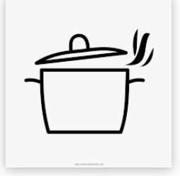

- popcorn kernels
- salt
- butter or oil
1) Bring a medium or large pot over high heat and pour some oil or throw some butter into the pot. Let it heat up a little.
2) When the pot is pretty warm and the oil or butter starts sizzling, throw the popcorn kernels into the pot.
3) IMPORTANT STEP: COVER THE POT WITH ITS LID, otherwise you will see popcorns going everywhere.
4) Your popcorns are ready when you don't hear any more popping.
5) They taste great with a pinch of salt. Now your popcorns are ready to be served!
